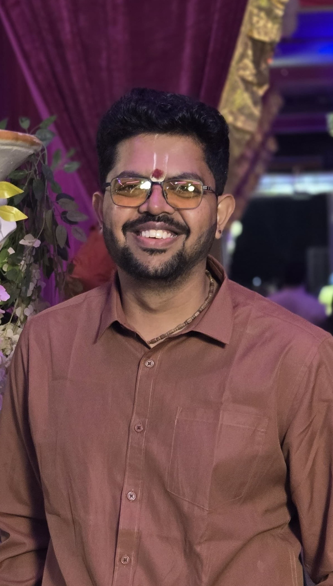

My core research areas are in Graph Theory, Combinatorics, and Theoretical Computer Science.
Currently, my work focuses on determining the minimal forbidden induced subgraph characterization of word-representability under restrictions to specific graph classes. In addition, I am actively developing a general framework for extending hereditary graph classes.
Handled part development lifecycle from the initial design phase through to successful mass production stages.
Thesis: Characterizations and properties of word-representable graph classes
Supervisor: Dr. H. Ramesh